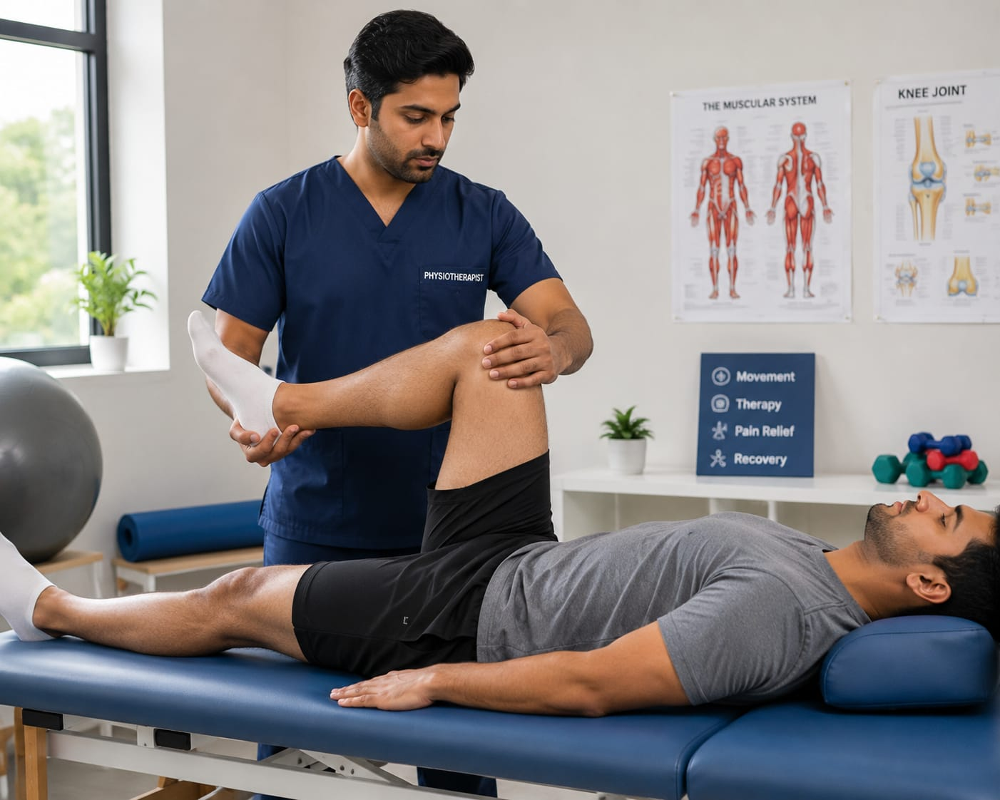

- Imagine a person suffering from back pain or difficulty walking after an injury.
- They visit a physiotherapy clinic for treatment and recovery.
- There, a person helps them do exercises, movements, and therapies to reduce pain and improve body movement.
- That person is called a Physiotherapist.
- 👉 In simple words: Physiotherapists help people recover from pain, injuries, and movement problems.
Physiotherapist
🧑🎨 What Do They Do?

🎓 How to Become a Physiotherapist
These Physiotherapy programs help students learn body movement therapy, pain management, rehabilitation exercises, injury recovery, and physical treatment methods.
BPT (Bachelor of Physiotherapy)
Duration: 4.5 Years (Includes Internship)
Eligibility: 12th Pass with Physics, Chemistry, and Biology (Minimum 50% Marks)
Exam: State-Level CETs / University-Level Entrance Exams
📝 Exam Details
(Click on the exam name to see full details)
State-Level CETs University-Level Entrance ExamsNote: Physiotherapy programs include classroom learning, practical training, rehabilitation exercises, hospital internships, and patient treatment sessions.
These advanced Physiotherapy programs help students specialize in rehabilitation, sports injuries, neurological therapy, orthopedic care, and advanced physical treatments.
MPT (Master of Physiotherapy)
Duration: 2 Years
Eligibility: BPT Graduate with Internship Completion
Exam: State PG CETs / University-Specific Entrance Exams
📝 Exam Details
(Click on the exam name to see full details)
State PG CETs University-Specific Entrance ExamsNote: Advanced Physiotherapy programs focus on specialized rehabilitation, movement therapy, patient recovery, and practical clinical training.
Note:
(Age limits, marks, and admission process may vary depending on the college or state. These courses are available in many colleges and universities across India. You can choose colleges based on your location, budget, and entrance exams.)
🏛️ Top Colleges & Institutes for Physiotherapy in India
(Tap on a college to view details)
After 12th (Degrees & Professional Diplomas)
Post Graduate Institute of Medical Education and Research (PGIMER), Chandigarh Christian Medical College (CMC), Vellore Sanjay Gandhi Postgraduate Institute of Medical Sciences (SGPGIMS), Lucknow King George's Medical University (KGMU), Lucknow Saveetha Institute of Medical and Technical Sciences (SIMATS), Chennai Madras Medical College, Chennai Jamia Hamdard, New Delhi Seth GS Medical College and KEM Hospital, Mumbai Manipal College of Health Professions (MCHP), Manipal Pandit Deendayal Upadhyaya National Institute for Persons with Physical Disabilities, New DelhiAfter Graduation (PG & Advanced Craft)
Post Graduate Institute of Medical Education and Research (PGIMER), Chandigarh Christian Medical College (CMC), Vellore Sanjay Gandhi Postgraduate Institute of Medical Sciences (SGPGIMS), Lucknow King George's Medical University (KGMU), Lucknow Saveetha Institute of Medical and Technical Sciences (SIMATS), Chennai Dr. D. Y. Patil Vidyapeeth, Pune Jamia Hamdard, New Delhi Seth GS Medical College and KEM Hospital, Mumbai Sri Ramachandra Institute of Higher Education and Research, Chennai Sancheti Institute College of Physiotherapy, PuneSTEP 1
Imagine you are working as a Physiotherapist in a clinic or hospital.
STEP 2
People visit you with body pain, injuries, or difficulty in movement.
STEP 3
You examine their body movements and find out the problem.
STEP 4
You help them do exercises, stretches, and therapies to reduce pain and improve movement.
STEP 5
You help patients recover from injuries and improve their physical health.
STEP 6
If helping people recover through physical exercises and therapy excites you, this career may suit you.
🏥
Hospitals
Help patients recover from injuries, surgeries, and physical pain.
🩺
Physiotherapy Clinics
Provide exercise therapy and rehabilitation treatments.
🏃
Sports Centres
Help athletes recover from sports injuries and improve fitness.
🦴
Rehabilitation Centres
Support patients recovering from accidents, strokes, and surgeries.
🏫
Schools & Special Care Centres
Help children and people with physical difficulties improve movement.
🏠
Home Healthcare Services
Visit patients at home and provide therapy sessions.
🎓
Physiotherapy Colleges
Teach physiotherapy students and provide practical training.
✈️
Abroad Opportunities
Work in hospitals, rehabilitation centres, and sports clinics in different countries.
(Click Yes or No for each question)
1. Are you interested in learning how the human body moves?
2. Do you like helping people recover from pain and injuries?
3. Have you ever thought about helping people improve their body movement?
4. Are you interested in learning about the exercises and therapies that help patients?
5. Imagine a patient visiting your clinic with severe back pain. You guide them through exercises and therapy sessions to reduce pain and improve movement. Does this excite you?